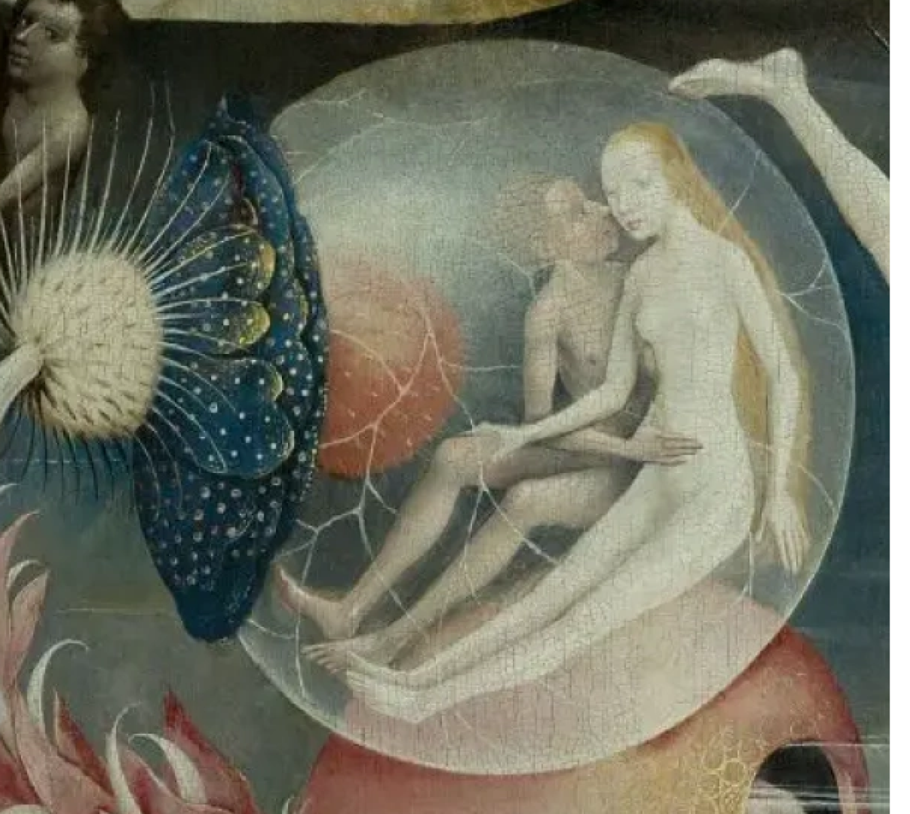

ОСОБЕННОСТИ ТВОРЧЕСТВА



Густонаселенность картин; смелая, безудержная фантазия в изображении монстров и ада реализована в канонических религиозных сюжетах; ловкое сочетание яркого визуального ряда с нравоучительным содержанием - это всё о творчестве Иеронима Босха. Сюрреалисты называют Босха «почетным профессором ночных кошмаров». Трудно не заметить, что при всей своей иконографичности, стиль картин Иеронима Босха выходит далеко за рамки каких-либо канонов. В современной поп-индустрии существует такое явление как «христианский рок» - многие «богоугодные» коллективы звучат громче, чем ад, и мрачнее, чем апокалипсис. В определенном смысле их можно считать последователями Босха. Босх тоже прославлял Бога, но сделался знаменит за счет присутствовавшего на его полотнах Дьявола.